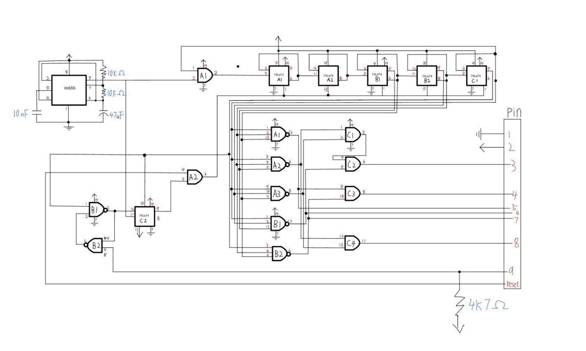
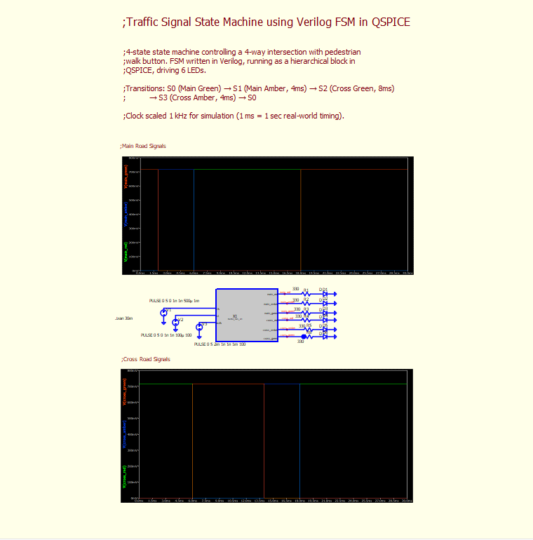

A 4-state traffic signal controller for a Main Road and Cross Road intersection with a pedestrian walk button. Originally built on a breadboard using discrete TTL logic gates for Rutgers Digital Logic Lab, then redesigned from scratch as a Verilog module running inside QSPICE with LED output stages and verified through simulation.
The breadboard build
The original build used a 555 timer to generate the clock, 74LS74 D flip-flops for the state register, and AND-gate decode logic mapping state combinations to the red/yellow/green outputs on each signal head. Designed and simulated in LTSpice and Tinkercad first, then wired on a breadboard — no microcontroller, no soldering, no custom PCB.



The QSPICE redesign
The breadboard version had timing and wiring issues that were hard to debug in hardware, so I rebuilt the whole design from scratch as a Verilog module inside QSPICE. The FSM uses a 2-bit state register and a 4-bit counter for state timing, with an asynchronous reset that forces the system into the default state on power-up. Six LED output stages (330Ω current-limiting resistors plus LEDs) sit downstream of the FSM outputs.

Verified in simulation across the full cycle: state transitions land at exactly the right clock edges, and every output drives its LED cleanly through the 330Ω resistor. The Verilog source, QSPICE schematic, and compiled module are all on GitHub.
This project taught me the difference between a design that almost works in hardware and one that's actually verified in simulation before you touch a breadboard. Both sides — the physical build and the simulated redesign — reinforced digital logic fundamentals: state encoding, timing, and the gap between paper design and working circuits.
Technologies: Verilog HDL, QSPICE, 555 timer, 74LS74 D flip-flops, TTL logic gates, breadboard prototyping, LTSpice, Tinkercad, finite state machine theory.